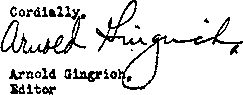

Supreme Court Denies" Freedom of Conscience 3
California’s Supreme Court Decision
“Let the People Know the Truth”
Interesting Information About Agriculture
Published every other Wednesday by
WATCHTOWER BIBLE AND TRACT SOCIETY, INC.
117 Adams St., Brooklyn, N. Y,, U, S. A,
Editor Clayton J. Woodworth
Business Manager Nathan II. Knorr
Five Cents a Copy
$1 a year in the United States
|1.25 to Canada and all other countries
NOTICE TO SUBSCRIBERS
Remittances; For your own safety, remit by postal or express money order. When coin or currency is lost in the ordinary mails, there Is no redress. Remlttanoes from countries other than those named beiow may be made to the Brooklyn office, but only by International pastel money order.
Receipt of a new or renewal subscription will be acknowledged only when requested. Notice of Explratton Is sent with the journal one month before subscription expires. Please renew promptly to avoid loss of copies. Send chanfle of address direct to us rather than to the post office. Your request should reach us at least two weeks before the date of issue with which it is to take effect. Send your old as well as the new address. Copies will not be forwarded by the post office to your new address unless extra postage is provided by you.
Published also in Afrikaans, Bohemian, Danish, Dutch, Finnish, French, German, Greek, .Hungarian, Japanese, Norwegian, Polish, Portuguese, Spanish, Swedish, Ukrainian; also special Australian edition in English,
OFFICES FOR OTHER COUNTRIES
England 34 Craven Terrace, Tiondori, W. 2
Canada 40 Irwin Avenue, Toronto 5, Ontario
Australia 7 Beresford Road, Strath field, N.S.W. South Africa 623 Boston House, Cape Town
Entered as second-class matter at Brooklyn, N, Y,, under the Act of March 3, 1879,
♦ Editor The Chronicle—
Sir: California has covered itself with glory!
At last we are safe from little children who threaten to destroy our freedom and our liberties; small children who place their trust in God and who believe that honor and obeisance belong to Him only; children who have the courage to stand for their convictions against much opposition and who insist that they have the right to worship God according to the dictates of their conscience.
The State Supreme Court has rendered a momentous decision; it will now be perfectly proper for school authorities to instill by force the principles of liberty and freedom in these small children.
The flag again flies high o’er the land of the free and the home of the brave.—H. R. Alden, in San Francisco Chronicle.
♦ Over in Italy conscientious objection to flag salutes is not permissible. In Germany any parent whose child failed to take part in the morning “Heil Hitler” chorus would probably find himself in a concentration camp. In Russia any student who refused to raise his clenched fist when the pedagogue’s order for a Communist salute was given might be taken down into the cellar and shot. But in this country, in blessed contrast, a citizen can join in patriotic exercises or not, as he pleases, without being any the worse for it. Once in a while some public official does run counter to this democratic spirit, but he usually lives to regret it.—Hutchinson (Kans.) News.
♦ Add to silly court rulings of the year the recent decision of the New York Court of Appeals that a school child can be forced to salute the American flag because the gesture is not an act of worship, and therefore does not interfere with religious liberties.
Such a misguided and inept ruling proves that not all judges are all-wise. Worse yet, it defeats its purpose of encouraging patriotism and love of country, for a child certainly learns neither by being made to perform an act forbidden by his family. All it does is confuse and embitter the child.-Minneapolis Star.
“And in His name shall the nations hope.”—Matthew 12:21, A.R.V.
Volume XX Brooklyn, N.Y,, Wednesday, May 17, 1939 Number 613
Supreme Court Denies Freedom of Conscience
ifpOMPULSORY FLAG SALUTES” is
VJ the title of an interesting article in the April issue of Law Notes, published at New York. The author, Thomas J. Booth, refers to the fact that the validity of compulsory flag-sal nte laws has been upheld by the highest court in eaeh of five states and by one federal district court, and that under those judicial rulings public school officials may arbitrarily ignore and override the conscientious Objection of children who believe that their participation in the school flag-salute ceremony is an act violating the mandate of Almighty God. Ue states:
With these decisions a new appendage has been added to the body of ease law—a malignant growth which should he cauterized in its incipient stage.
At the time his statement was made there were two cases pending before the United States Supreme Court involving the flagsalute -regulation. One of these was the case of Johnson v. Town of Deerfield, which was appealed from a three-judge United States District Court for Massachusetts to the nation’s highest tribunal. The other was the case of Gabrielli v. Knickerbocker, carried on appeal to Washington from California’s Supreme Court. >
With these two cases before it, the Supreme Court of the United States had an excellent opportunity to apply the burning iron and purge this ‘'‘malignant growth” from the body politic. It failed to use the opportunity. On the contrary, on April 17 it upheld the former decisions. Thus it caused an evil and wicked principle of law to be made a permanent addition to the body of case law of this nation. Additionally, by that ruling the Supreme Court started tolling of the bell signaling the last obsequies of freedom of conscience in this “sweet land of liberty”.
What is this new appendage to the law which has been so aptly tagged as “a malignant growth”?
It is a new principle grafted onto the law. It is an alien, un-American conception of law. It is of the pernicious, totalitarian model easily recognized in the forced ‘'ffieils”, goosestepping and saluting that is epidemic today in what Americans still call “the Old World”. It is a concept of law which exalts “the State” to supremacy, subjects all individual rights to state control, and requires unquestioning obedience of every person to those in charge of the regimentation.
In the case of Johnson v. Town of Deerfield, the Supreme Court affirmed the decision of the three-judge Federal district court for Massachusetts. In the case of Gabrielli v. Knickerbocker, the highest court rejected the appeal on technical grounds. No lengthy opinion was given by the court, but its affirmance of the district court’s opinion in the Johnson case implies that the Supreme Court agrees with the reasons and statements set forth in the lower court’s decision. The record in that case discloses the issue raised and enables one to evaluate its determination by the high court.
William A. Johnson is a resident of the Town of Deerfield in the Commonwealth of Massachusetts. Uis children, William, Dorothy, and Gloria, attended the South Deerfield public schools until October 17, 1938. On October 14 last, the school committee adopted a resolution requiring all pupils to salute the flag, and providing for expulsion of pupils who refuse to comply with the rule. This was dope in conformity with the provisions of Chapter 71, Section 69, of the General Laws of Massachusetts.
The Johnson children refused to comply with the rule. On October 17 they ■were suspended from school by the superintendent. Later this suspension was confirmed by the school committee. An action Was then brought in the Federal District Court to require reinstatement of the children in the public
school. In the complaint filed in this action the children informed the court that the act of saluting a flag violates the law of Almighty God as stated in His Word, the Bible. (Exodus 20:3-6) The court, in deciding the ease, said:
They [meaning the flag salute and pledge of allegiance] do not concern the views of any one as to his Creator. They do not touch upon his relations with his Maker.
Only a man with a conscience can be a true patriot
In affirming that decision of the district court, the United States Supreme Court approved and confirmed this quoted statement. In other words, the court says that no school child has any right to believe that the flag salute is contrary to the law of God. It holds that no school child has the right to decide whether his act is in conformity with the law of God. This tribunal has exalted itself to the position of an arbiter of the validity of the school child’s conscientious convictions, and decides for the child that the flag salute cannot in any sense be concerned with the relations of such child to his Creator. The court goes further and holds that because a child entertains such belief, and acts in accordance with that belief, he may be denied the right of attendance at the public schools.
The effect of this decision goes far beyond the mere question of whether a child can be required by state law to salute the national flag. It takes the highest court into a new field. It establishes a new principle, which is contrary to fundamental principles followed by courts in this country for a century and a half. It sanctions the removal of freedom of conscience and religious liberty by means of a state law or an administrative regulation. It authorizes courts to enter into the realm of the individual’s conscience and to decide whether or not conscience is rightly educated, exercised and directed.
This battle over the right of conscience was fought out in the early days of this country. The struggle finally culminated in the clear-cut declaration that no judge or civil magistrate had the right to intrude his powers into the field of opinion and belief.
The United States Supreme Court made that principle its own in 1889, when, in the case of Davis v. Beason (133 U.S. 333), it stated:
With man’s relations to his Maker, and the obligations he may think they impose, and the manner in which an expression shall be made by him of his belief on those subjects, no interference can be permitted, provided always the laws of society, designed to secure its peace and prosperity, and the morals of its people, are not interfered with.
This language is definite and easy to understand. It provides that one may think as he sees fit relative to his obligations to Almighty God. He has the right to make such expression of his belief, whether by speech or by silence, by act or by refusal to act, on those subjects, without interference by any governmental authority, provided that he does not jeopardize the peace and safety of the country and the morals of the people.
Now we find that the court of last resort has disregarded this established principle and stated a new one. In effect, the decision in the Johnson case means practically this: That interference by law, custom or school-board regulation with man’s 'relations to his Maker and the obligations he may think they impose is permissible and will receive the sanction of the court, regardless of the sincerity and conscientiousness of the person involved.
Today you have liberty of conscience provided there is no law with which your conscience may come into conflict. If you follow CONSOLATION
a course of action (even though that be ordained and commanded by Almighty God) which tarings you into conflict with a law of the state, then it is just too bad for you and your conscience. Under this decision your belief is subordinated to the law of the state. The state is made the supreme power, and freedom of conscience becomes a thing of the past. If your conscientious belief and corresponding action come into conflict with the law, then the court, in all its power, might and majesty, may pass on the validity of your belief and may exercise the claimed right and authority to declare your belief entirely invalid and deny you rights or punish you for entertaining such belief and for acting in accordance with it.
Sowing the wind
In Germany the children in the public schopls are required to sing hymns to an image of Hitler. Mystic and solemn rites are performed in the schools to mark the elevation of a man to the position of a god. This is image worship. It is the exaltation of the creature above the Creator. It is clearly and unmistakably a violation of the law of Almighty God. In Germany it doesn’t do any good for any child or adult to have any conscientious objection to the ceremonies. The school officials, the courts, Hitler, the entire government, will rule such objection invalid. They will hold that no pupil has the right to entertain any belief that the act of ringing to Hitler’s image and of exalting him is contraiy to the law of God. That’s the totalitarian model.
In the United States, under the decisions in the flag-salute eases, the same condition eould be established. School boards could, if they so desired, establish images to Roosevelt in the schoolhouses and require pupils to Sing hymns of praise and exaltation to him. They eould put in statues symbolizing the “New Deal” and require all pupils to sing hymns of praise to the “New Deal” as being the salvation of the country. Republicans and people of other political beliefs than Roosevelt’s and the New Dealers’ might well object to participating in such ceremony. They might think it sacrilegious. They might even consider the ceremony to be a violation of God’s law; but their right to so think and to so consider has been foreclosed by the decision of the nation’s highest court.
The legislative bodies could go even further. They could put statues of the nation’s chief executive in the churches and require the congregation to sing hymns of praise and exaltation to that personage. Would people object to that in the churches? Many of them would. They would conscientiously object to such idol worship and exaltation of man. But if the matter were taken before the courts, these decisions which have been rendered in the flag-salute eases would be brought before the judges and they would say that the precedent has been established and you have no right whatsoever to believe that this action required by law is a violation of the law of God.
Carrying the illustration still further, it is definitely shown that the groundwork is laid for the establishment of a state religion in this country. Under the principle now fixed by our courts, a state religion could be here established which would receive judicial sanction. The Roman Catholic Hierarchy has long desired to secure power and control in this country. If it should secure a majority in the United States Congress and secure control of the executive’s office, then it would be fully entrenched. It could enact and put in force laws making the Catholic church the official church of the nation and requiring all people to subscribe to its dogmas, to support it, and
to retrain from criticizing it in any way. Some Protestants and Christians would object to this. They would say that we cannot conscientiously support the Catholic church. They would assert their rights in court. The courts could then hold that their beliefs were invalid and would say that the law covers this matter and you must conform your position and belief to the law.
In the early days of this country those people whose beliefs were not acceptable to the majority were banished from the community. The Commonwealth of Massachusetts banished the Quakers. Illinois drove the Mormons from its borders. Roger Williams was competed to flee from Massachusetts. In these modem days people look upon such tactics as barbarous, cruel, narrow-minded. Patriotic spellbinders are inclined to point with pride to our present “civilization”, so called, and to rejoice in the fact that we have great freedom of religion and belief. Even the courts, while passing upon the merits of these flag-salute questions, have exalted in glowing phrase the benefits of religious freedom, and then proceeded in the next breath to deny such freedom. The time is now here, however, in which Americans cannot point with pride to their great, free civilization. Americans of today are no better than the bigoted religionists of Massachusetts and Illinois who banished the Quakers and the Mormons. Today Americans banish God-fearing children from the public schools, telling those pupils, ‘You must cease obedience to the law of God or you cannot secure your education at the public schools?
So it appears that the people of this nation have not progressed very far from the intolerant viewpoint of their forefathers.
In another flag-salute ease, to wit, that of Gobitis v. Minersville School District (21 Fed. Supp. 581), Judge Maris, then of the United States District Court for Eastern Pennsylvania, gave a clear-cut, definite statement of what the law should be on this issue. We quote from his decision:
Liberty of conscience means liberty for each individual to decide for himself what is to him religious. If an individual sincerely bases his acts or refusals to act on religious grounds they must be accepted as such and may only be interfered with if it becomes necessary to do so in connection with the exercise of the police power, that is, if it appears that the public safety, health or morals or property or personal rights will he prejudiced by them. To permit publie officers to determine whether the views of individuals sincerely held and their acts sincerely undertaken on religious grounds are in fact based on convictions religious in character would be to sound the death knell of religious liberty. To sueh a pernicious and alien doctrine this court cannot subscribe.
In all the cases involving the flag-salute question before state or federal courts there has been no answer made to these fundamental, , clear-cut, logical principles stated by Judge Maris. Counsel for the school boards and the judges have studiously avoided answering them. There is a good reason for such avoidance. The reason is that they are unanswerable. When you permit a court or a school board or any other kind of official to decide upon the validity of the conscientious beliefs of another, then you do sound the death knell of religious liberty. The measured tolling of that death knell the United States Supreme Court has now started, and unless some unforeseen event occurs to arrest the spread of this “malignant growth” it will he only a matter of time until freedom of conscience will be interred among other forgotte.i things.
Jehovah’s witnesses and their children will not stultify conscience.
They will not change their conception of the law of Almighty God to conform to a court decision. In many parts of the United States these boys and girls have demonstrated their faith and their integrity under adverse conditions. Although subjected to taunts, abuse, reproach, beatings and chokings, they have not wavered in their determination to render complete obedience to the law of Almighty God. They will cent in up to obey God, regardless of what judges may say or what school boards and teachers may do.—0. R. Moyle.
P.S. Since the foregoing was written, and as a direct result of the Supreme Court decision, Dorothy Johnson, Gloria Johnson and William Johnson the younger were summoned to appear in the Deerfield, Massachusetts, Franklin Co. Court, May 1, 1939, charged with being habitual school offenders and were committed TO A COUNTY REFORMATORY.
Yet, in spite of this decision of the Supreme Court against freedom of conscience, and this pending Massachusetts action against it, the president of the United States in the very same month in which both these occurred could write to three Methodist groups at Kansas City of “our American heritage of complete freedom of conscience” and of “the sacred right of freedom of conscience”.
THE courts of last resort in five states and one federal court have sustained the validity of compulsory flag salute laws requiring school children to recite the Pledge of Allegiance in School exercises. With these decisions a new appendage has been added to the body of case law—a malignant growth which should be cauterized in its incipient stage.
The Pledge of Allegiance was written in the editorial office of the Youth's Companion by James B. Upham, and first appeared in print in the issue of that magazine published September 8, 1892. It was prepared as a part of the magazine’s campaign to place the flag in every schoolhouse in the United States, that it might be saluted simultaneously. . . .
In about half of our states the performance of this exercise is made a compulsory part of the public school curriculum. The laws of some states specify what flag exercise is to be held, while in others a duty is imposed on the state educational authorities to prepare a program for use in the public schools “providing for a salute to the flag”. Some of these laws were enacted before the World War, but the validity of them was not questioned until recently, when the young members of a religious sect called Jehovah’s witnesses refused to participate in flag salute exercises.
The refusal of these children to salute the flag was predicated upon religious grounds. They were taught by their elders that saluting the flag amounted to worshiping a god other than the God Jehovah—a violation of the commandment "Thou shalt have no other gods before me . . . Thou shalt not bow down thyself to them, nor serve them”. The position of these people was described by their leader, Judge Rutherford, as follows: "The flag of the United States is not the flag of Jehovah God and Christ Jesus. It is the emblem of the power that rules the nation; and no one can truthfully say that God and Christ Jesus rule a government where crime is rampant.”
Nicholls v, Mayor and School Committee of Lynn was the first of these flag salute cases. There the offender, a third grade pupil, was observed to stand quietly by his desk while his classmates recited the pledge and raised their right, hands in salute to the flag. In the two preceding years he had joined in the exer
cises. Upon inquiry it was learned that he had decided not to salute, “because he was being called upon to adore the flag and bow down to the flag and that according to his religious views he eould only adore and bow down to Jehovah.” The boy was excluded from school privileges until he should be willing to subscribe to all of its regulations.
The court in its decision used two arguments which have been employed by other courts in reaching the same conclusions. First, it emphasized the importance of instilling in young hearts an early and proper respect for the flag—symbol of the Republic and its institutions. “That is a ceremony clearly designed to inculcate patriotism and to instill a recognition of the blessings conferred by orderly government under the Constitutions of the state and nation.” Second, the court decided that the salute pould not be interpreted as religious worship. It found that, “There is nothing in the salute or the pledge of allegiance which constitutes an act of idolatry, or which approaches to any religious observance.”
In the first argument the court appeals to the national desire for self-preservation; that same desire which dictated the opinions in the Draft Cases. In People v. Sandstrom, one of the latest flag salute cases to be decided, the court also used the argument of patriotism.
“There is another strength which is necessary to preserve the government besides military force, and that is the moral strength, or public opinion of its citizens. Public opinion is as vital to the maintenance of good government as an army or a navy; in fact these latter can be destroyed quicker by public opinion than by the attacks of the enemy. Many a nation has succumbed to the breakdown of the morale of its people. The State, therefore, is justified in taking such measures as will engender and maintain patriotism in the young.”
One cannot deny the truth of the last sentence in the case of Gabrielli v. Knickerbocker where the court said: “The simple salutation to the flag and the repetition of the pledge of allegiance, in the judgment of the proper governing body, tend to stimulate in the minds of youth in the formative period of life sentiments of lasting affection and respect for and unfaltering loyalty to our government and its institutions.” But I submit the stimulating should not be done by force.
Militarism, chauvinism, patriotism! Where is the line to be drawn and who is to draw it ? Is patriotism a pill to be ruthlessly pushed down young, unwilling throats? In peacetime, particularly, a genuine love for country would find a more lasting lodgment in young hearts if instilled by patience and wisdom rather than coercion and command. Suffer the little militarists to depart from us, for of such are the totalitarian states!
One important thing must be remembered. These children are not Communists, Nazis, or members' of any political organization having doctrines subversive to our institutions. They love their country. Their only fault is their unwillingness to salute our flag in an exercise which for them has a religious significance.
Because of their religious scruples as against saluting the flag children have been expelled from public schools in twelve states. In some instances they have be$n brutally whipped, threatened with terms in reformatories, and otherwise mistreated by educational Storm Troopers with chauvinistic hearts.
“The salute of the flag,” said Judge Lehman in his concurring opinion in People v. Sandstrom, “is a gesture of love and respect —fine when there is real love and respect back of the gesture. The flag is dishonored by a salute by a child in reluctant and terrified obedience to a command of secular authority which clashes with the dictates of conscience. The flag ‘cherished by all our hearts’ should not be soiled by the tears of a little child. The Constitution does not permit, and the legislature never intended, that the flag should be so soiled and dishonored.” Judge Lehman concurred in the ruling of the court that the parents of Grace Sandstrom were not guilty of a failure to send their daughter to school, but did not approve the court’s utterances on the validity of the New York flag salute law.
The second point made in the Nicholls case, as already noted, was that the salute did not constitute an act of idolatry. I ask, Is a court competent to determine what belief is religious and what is not? Can it scrutinize the innermost recesses of the soul and say the belief you hold is not a religious one, or, the thing you do or refuse to do does not amount to worship and therefore is beyond the protection of the fundamental law of the land?
Our Supreme Court defined religion in the case of Davis v. Beason. “The term ‘religion’ has reference to one’s views of his relations to his Creator, and to the obligations they impose of reverence for his being and character, and of obedience to his will. . . . With man’s relations to his Maker and the obligations he may think they impose, and the manner in which an expression shall be made by him of his belief on those subjects, no interference can be permitted, provided always the laws of society, designed to secure its peace and prosperity, and the morals of its people, are not interfered with.”
Under this definition one is free to eat the ceremonial foods and observe such feasts and fasts as his religion requires, providing only -that “the laws of society, designed to secure its peace and prosperity, and the morals of its people, are not interfered with.” In a federal ease from Pennsylvania, the only reported decision holding children were entitled to attend school though they refused to salute the flag, the court makes a strong point of the individual’s right to judge of the validity of his own religious beliefs. “Liberty of conscience,” said the court, “means liberty for each individual to decide for himself what is to him religious. If an individual sincerely bases his acts or refusals to act on religious grounds they must be accepted as such and may only be interfered with if it becomes necessary to do so in connection with the exercise of the police power, that is, if it appears that the public safety, health or morals or property or personal rights, will be prejudiced by them. To permit public officers to determine whether the views of individuals sincerely held and their acts sincerely undertaken on religious grounds are in fact based on convictions religious in character would be to sound the death knell to religious liberty. To such a pernicious and alien doctrine this court cannot subscribe.”
Appeals were taken to the Supreme Court of the United States in the case of Leolcs v. Landers and Hering v. State Board of Education but both of these cases were dismissed for want of a substantial federal question. Thus, this problem is left in the laps of the state courts. When other state courts are called upon to consider the problem at a future date, they will do well to sail the course courageously charted by the federal court in the Gobitis case.—Thomas G. Booth, in the April, 1939, issue of Lena Notes. .
THIS nation was founded on the principle that freedom of conscience is guaranteed to all people. Every person has the right of private judgment. No man, be he judge, governor, president; member of a legislative body, school-board principal, or any other kind of factotum, has the right or authority to determine matters of judgment for another. Each individual has the right to form his own opinions, and the right to act in accordance with those principles.
Centuries ago the Quakers came from England to New Jersey and Pennsylvania in order that they might have this right of conscience and of private judgment. From England also the Puritans and Pilgrims fled to the wilds of North America because their right of conscience was interfered with by the ruling powers. Roger Williams left the church and state union of Massachusetts and fled to Rhode Island, in order that he and others with him might have freedom of conscience and the right to act in accordance with their sincere and honest beliefs.
It took many years of fighting for libertyloving citizens to finally secure the position where the right of freedom of conscience was crystallized into clear-cut, definite statements upholding and guaranteeing that right for every individual.
It was Thomas Jefferson who first expressed a clear and succinct statement as to freedom of conscience, religious liberty, and the right of individual judgment. This expression is gi the well-known Virginia Statute for Religious Freedom, written in 1785. Here is a quotation from that Statute;
. Well aware that Almighty God had treated the mind free, . . . our civil rights have no dependence on our religious opinions . , . ; that, therefore, the proscribing any citizen, as unworthy the public eoniidenee, by laying upon him an incapacity of being called to offices of trust and emolument, unless he profess or renounce this or that religious opinion, is depriving him injuriously of those privileges and advantages to which, in common with his fellow-citizens, he has a natural right; . . . that to suffer the civil magistrate to intrude his powers into the field of opinion and to restrain the profession or propagation of principles, on supposition of their ill tendency is a dangerous fallacy, which at once destroys all religious liberty, because he being of course judge of that tendency will make his opinions the rule of judgment, and approve or condemn the sentiments of others, only as they shall square with, or differ from, his own; that it is time enough for the rightful purposes of civil government for its officers to interfere, when principles break out into overt acts against peace and good order; and, finally, that truth is great and will prevail, if left to herself; that she is the proper and sufficient antagonist to error, and has nothing to fear from the conflict . . ,
This ringing declaration by Thomas Jefferson concerning the right of private judgment was embodied by the nation's highest court in the body of ease law of the land in the ease of Davis against Beason. Quoting from that case:
. , . With man’s relations to his Maker and the obligations he may think they impose, and the manner in which an expression shall be made by him of his belief on those subjects, no interference can be permitted, provided always the laws of society, designed to secure its peace and prosperity, and the morals of its people, are not interfered with.
Not long after the thirteen colonies separated from Great Britain a flag was designed and adopted as the flag for the entire Union. This flag was carried upon the battlefields. It has waved above our public buildings. It has stood as a symbol of this nation and of the principles upon which the nation was founded. If the flag stands for anything at all, it stands for freedom of conscience and the right of individual judgment. Floating from our public buildings, school houses and other places, it has in the past symbolized and said to the world that in this country men are free. It has said that in this country men may think as they please, and may freely act in accordance with their thoughts; and that they may refrain from doing acts which conflict with their sincere, honest convictions. The only limitation to this freedom is that any person in his action may not do anything which conflicts with public morals, the property of others, and the public safety.
People who love liberty have respected the flag and honored it because of these principles for which it stands. For over a century this honor and respect has been expressed by close adherence to these fundamental principles of liberty, freedom of conscience and the right of individual judgment. Tn recent years, however, there has been a change. A studied effort is being made to eliminate adherence to the principles of liberty and freedom, and to express what is called “respect and honor for
the flag” through a ceremonial observance. In other words, an outward salute to the flag is being substituted in place of performance of the principles for which the flag is said to stand. Occasional ceremony takes the place of continuous, upright conduct. To his neighbors a man may deny liberty, deny the right of freedom of speech, deny the right of conscience, deny the right of private judgment, but if he salutes the flag at stated times and talks with his mouth like a real he-patriot, he is considered a good citizen and is greatly exalted in the public view.
On the other hand, a man may be an upright citizen, he may have fought for his country in war, he may obey the laws, he may uphold the principles of the Constitution, and of liberty, and yet if he fails to perform this ceremony of salute to the flag he is considered a degraded person, is barred from the right to earn a livelihood, his children are kicked out of school, and he is treated as though he were a debased, treacherous enemy of the country.
In 1892, four hundred years after Christopher Columbus landed in the New World, James B. Upham, editor of the Youth's Companion magazine, wrote a pledge of allegiance and initiated a campaign to have the United States flag placed in every schoolhouse of the land in order that it might be saluted simultaneously by all school children on the anniversary of the landing of Columbus. If.he could have foreseen the disastrous results which have come, he would have thought carefully before starting any such practice in the public schools.
A sincere follower of Jesus Christ does not believe in rendering salutes or obeisance to any flag, to any creature, to any image or symbol. If freedom of conscience means anything, he has a right to that belief. He has a right to act in accordance with that belief. He has a right to decline to render such obeisance to any flag, image or creature. School children have that right the same as adults. But in recent years that right has been ruthlessly denied to many school children. In addition, there has been inflicted upon them cruel and inhuman treatment. Because the children have adhered to what they have been taught and believed to be the law of Almighty God, they have been severely punished; they have been beaten with rods; some of them have been choked; they have been thrown against their desks; they have been ostracized, expelled from school, and sentenced to reformatories. A veritable patriotic inquisition has been developed and operated in this country in the past few years.
The most recent case, and one of the most outrageous cases of this Hitleristic style of patriotic instruction, is that of Daniel Morgan and his two sons, Robert and Adrian. Here are the facts:
Daniel Morgan is a resident of Fort Lee, New Jersey. His sons Robert and Adrian have been students in the Fort Lee high school. Until a week or so ago Daniel Morgan was employed as a state motor vehicle inspector on the public highways of New Jersey. He obtained this position by competitive examination. On March 30 he was discharged from his position as motor vehicle inspector without any hearing or opportunity of defense. On April 12 the school board of Fort Lee, at a secret session, expelled his sons, Robert and Adrian, from the right to attend the Fort Lee high school.
Why this sudden and arbitrary action ? The boys had been diligent students. They had been on the honor roll, and had always behaved themselves. Why were they thus summarily expelled from school? Why was Daniel Morgan arbitrarily removed from a position where he earned his livelihood? The answer is this: It is the definite policy of the State of New Jersey to deny sincere followers of Jesus Christ the right of freedom of conscience and of private judgment. It is the policy of the school board of Fort Lee to deny such persons the right of freedom of conscience and of private judgment. The same applies to the motor vehicle commissioner of the State of New Jersey.
During the entire school year Robert and Adrian Morgan had stood to one side and declined to salute the flag during the school ceremony. They had good reasons for such action. They believe and are willing to support with proof that the flag salute is a violation of the law of God. Because of such belief, no school board, no teacher, no judge, has authority to require them to do otherwise. The school board and the teachers recognized their right for the entire school year up to this month. Why this sudden change? In about thirty days more Robert Morgan would have graduated from high school with his class. Now, by reason of this malignant and malicious action of the school board, he is denied that right. The session of the school board at which these boys were expelled from school was a secret session. The boys were notified that they could come but that no reporters or others could be present. Why this great secrecy? Is the school board afraid to have its action in claimed support of education, patriotic instruction, love of country, and other alleged advantages in the interest of public welfare, done under the public eye? It looks fishy, and it smells bad.
There is no fault to find with the services of Daniel Morgan as a motor vehicle inspector. Why was he dismissed without the presentation of charges and without a hearing thereon ? What is the reason for such arbitrary action?
These questions can be answered best by presenting an illustration from the pages of Holy Writ. The record tells of another man by the name of Daniel who, in ancient time, was an official of the Persian government. He was a man of integrity and honest in all his dealings. He had enemies, however; and they conspired against him. They wanted to see him removed from his job. They knew they couldn’t find anything against Daniel, as to his work, or as to his honesty, in his position. But they determined among themselves to “get” him. This conspiracy is briefly stated in the Bible book of Daniel, chapter six, verses four and five, which read:
Then the presidents and princes sought to find occasion against Daniel concerning the kingdom; but they could find none occasion nor fault; forasmuch as he was faithful, neither was there any error or fault found in him. Then said these men, We shall not find any occasion against this Daniel, except we find it against him concerning the law of his God.
These conspirators knew that in the ease of conflict between the law of God and the law of man Daniel would obey the law of God regardless of the results. They knew that he would follow the voice of conscience. They knew that he would exercise his right of private judgment, and they figured that was the way in which they could “get” him. Their conspiracy succeeded, but only temporarily. They persuaded the king to enact a decree that his law's and rules should come ahead of the laws and rules of God. Daniel declined to obey that decree. As a result of that refusal, Daniel was cast into the lions’ den.
Now note the deadly parallel:
It is no secret that Daniel Morgan and his boys are Jehovah’s witnesses. They have given public testimony to that fact by their zealous endeavors to advance the proclamation of the gospel message of Jehovah’s kingdom throughout Port Lee and other places. It is no secret that the Roman Catholic Hierarchy is engaged in a vengeful war against Jehovah’s witnesses. For the past ten years this has been manifested throughout the entire State of New Jersey and in other parts of the United States. This war is not waged with truth and with fact. The Hierarchy fights its battle by pouring out vituperation, abuse, vilification, falsehood and slander.
In many of the flag-salute cases in various states where children of Jehovah’s witnesses have been expelled from the schools and their parents prosecuted under the law bigoted subjects of the Roman Catholic Hierarchy have been very active in bringing about this form of persecution.
Jehovah’s witnesses are loyal and law-abiding in every way; and like Jehovah’s prophet of old, the only way in which they can be reached is concerning the law of their God. The flag-salute regulation is being used for that unworthy object. It is being used as an instrument by malicious persons to frame innocent and upright people, degrade them in the public eye and put them in jeopardy. Notice carefully the slimy trail of the Roman Catholic Hierarchy in this case in Fort Lee.
Approximately two years ago Robert and Adrian Morgan decided that the flag salute is contrary to the law of Almighty God. They thereupon went to the office of the school principal, Mr. Thompson, and asked to be excused from the ceremony. He listened to their explanation and stated that he had no authority to excuse them. Nevertheless, although the boys did not participate in the ceremony, nothing wras done about it for two years. The flag is saluted five times each week in that school. Recently, however, a group of students, all Roman Catholies, began to agitate the situation. They raised a rumpus every time the Morgan boys stepped out of the room before the ceremony during the assembly period. Those Catholic students made bright remarks, such as, “Lock the door,” “Come back here; don’t let them out.” They conspired together against the Morgan boys and finally brought the matter to the attention of a history teacher, Miss Brady, also a Roman Catholic. They told her that the boys would not salute the flag and that their father had a State job. Then she fanned the flames by giving a speech to the history class, stating that to consider the flag an idol or an inanimate object was nothing but “dumb ignorance”.
Then somebody in Fort Lee became very much interested in Daniel Morgan’s status as a motor vehicle inspector. He received a telegram to report to the chief inspector’s office. The chief inspector is George Zigler, also a Itoman Catholic. He informed Morgan that information had come from “the authorities” that Morgan was to be arrested for teaching his children not to salute the flag. Without any hearing, and without any complaint that his services had not been satisfactory, Morgan was then removed from his position as a motor vehicle inspector. Thus, for exercising the right of freedom of conscience and the right of private judgment, Morgan lost his opportunity to earn a livelihood as a State employee. And the State of New Jersey pretends to uphold the rights of conscience, freedom of worship, and liberty!
Having got rid of Morgan, the inquisition next proceeded against his sons, Robert and Adrian. A secret session of the board of education of Fort Lee was called for Wednesday evening, April 12. The boys and their father were notified to be present. They appeared, and at the meeting Mr. Thompson, the school principal, stated that the boys had failed to engage in the ceremony of saluting the flag, and that it was necessary for them to be brought before the board. Mr. Whittaker, chairman, thereupon asked them whether they had any reply to the charges. Robert Morgan then presented a statement to the committee, signed by both of the hoys, which reads as follows:
Mr. Chairman and Members of the Board of Education:
1 We believe it to be a mortal sin to “heil” man, bow to images, and salute flags. Paying tribute to inanimate objects is a pagan worship and an act of idolatry in the sight of God. We love our country and will obey every law of the land that does not conflict with the laws of God. We can he depended upon to render unto the state that which belongs to the state and unto God that which belongs to God. We respect that which the flag stands for and would not hesitate to take an oath of allegiance to our country, for it is the only one we know.
For approximately two years we have not engaged in the flag ceremonies and our failing to engage in such rituals has worked a hardship to no one and has not lessened our love for our country. We are members of the school band and orchestra and have both been on the honor roll.
We love our school, the student body and the officials, and it would be a great hardship upon us if we were expelled at this time. The saluting of the flag is a religious ceremony of pagan origin and to punish us for failing to indulge in pagan worship is religious persecution; therefore we, the undersigned, respectfully and earnestly plead with the board of education and the school officials to allow us to continue in our attendance at school until such time as our education has been completed.
Respectfully yours,
- [Signed] Adrian Morgan Robert Morgan
Daniel Morgan, father of the two boys, likewise presented to the board a statement, a part of which reads as follows;
School children are taught that in America under the “Stars and Stripes” there is freedom of conscience and freedom .of worship. They are taught that in the United States people can believe what they will concerning God and His laws, and act accordingly, provided that in so doing they do not violate good morals, infringe on others’ rights, or jeopardize the safety of the state. They are taught that each person has the right to decide for himself whether his belief is right or wrong, and that no official or court can pass upon the merits of his belief. In other words, a Protestant judge cannot judicially decree that Catholic beliefs are wrong and penalize Catholics for practicing them, or vice versa. ...
If these children are expelled from school because they act in accordance with their conscientious belief, shouldn’t your teachers cease teaching that there is freedom of conscience and freedom of worship for all in this country? You should face the matter fairly and honestly. Whether you think the child’s belief right or wrong is not the question. The question is: Shall the school boards be permitted to make hypocrites of the children of the land, or shall the parents of the children be at liberty to teach them the Word of Almighty God? Can you properly take away the right of private judgment of school children or parents? Can you rightfully deny school attendance to a child who, without injuring anyone, puts allegiance to his conception of the law of God ahead of a school regulation?
If you answer these questions in the affirmative, then you should remove from the civics lessons in your school the statements that all people have religious liberty in this country. . . .
Did the school board justify its position? Did it have any reasons to present why conscience should be stifled and suppressed? Did it give any explanation of the sudden move to dismiss these two boys from school? Did it give Robert Morgan a ehance to keep on attending school for about thirty days to secure his diploma? The board did not. Its ■ members discussed matters freely. They made patriotic remarks, and said that the boys should be glad to salute. One of the members followed the distinctive Roman Catholic method of pouring forth abuse and vilification upon Jehovah’s witnesses. Remarks of the chairman, Mr. Whittaker, included the following:
I heard the Watchtower the Other day and it was the most disgusting and disgraceful thing I ever listened to; he was making an attack on the Catholic Church. Judge Rutherford is fit for an asylum or jail.
That is the weighty and intelligent answer of this chairman of an educational committee to the facts and reasons set forth by these high-school lads. Another member of the board advocated hypocrisy. He said:
Why can’t you make believe; make a gesture and have a reservation in your own mindT
A mental reservation is a regular Roman Catholic method of polite, dignified lying.
The chairman displayed his ignorance by denying the fact that the pope’s flag is put above the American flag when religious services are held aboard United States battleships.
After deliberating for about an hour, the board announced its ruling. The chairman said:
The board by unanimous vote has decided that the boys can no longer attend school.
Daniel Morgan then said, “All right, sir, put that in writing, so that my boys will have something definite to point tcf as the reason for their being expelled.”
This aroused a weighty question among the board members: Should they disclose their ruling in writing? They discussed it among themselves, and finally stated that the- clerk would mail a statement to Morgan. Up to this time such statement has not been received by Daniel Morgan.
That is the ugly picture of how the educational storm troopers of New Jersey operate at Fort Lee. Patriotism, militarism, chauvinism—where is the line to be drawn ? Who will draw it? Is patriotism a pill to be crammed down young, unwilling throats? What right has the school board of Fort Lee to determine the validity of the conscientious beliefs of Robert and Adrian Morgan? Can that committee scrutinize the innermost recesses of the boys’ minds and say that the boys’ belief is not a Biblical one, not sincere and honest ? Can that committee properly say that the boys’ belief is not a conscientious one, and that therefore it is beyond the protection of the fundamental law of the land? That is what the board has assumed to do; and I submit that the board’s decision is entirely contrary to principles under which this country has operated for nearly two centuries.
I presume there are many patriotic citizens in Fort Lee. I suppose that there are some people in that community who really do love liberty and freedom. What about them ? Have they done anything about this? What is their attitude? Have they made any protest over this deprivation of civil rights ? Has any citizen of Fort Lee appeared and asserted that these boys have the right to act in accordance with conscience? No, not one. They are all silent as the tomb. Of course, residents of Fort Lee believe the flag should be honored. They believe it should be saluted. But to stand up for the principles which that flag symbolizes is another thing. It takes courage to stand up for freedom of conscience under these conditions. It takes a real man to come out and fight against superheated patriots; and real manhood is a rare thing in Fort Lee.
In this wide world there are some people that will applaud the action of the Fort Lee school board. Who are those people? Among them are the Hitlerites of Germany, who “heil” Hitler from early dawn until the setting of the sun. They will agree that children should have patriotism jammed down their throats. The only objection they would find is that the Fort Lee school board didn’t go far enough. They would insist that the boys and their father be put in a concentration camp, to be punished with unmentionable tortures for years to come.
In heathen Japan there are Shintoists who bow down to ancestors, to pictures and photographs. They also would agree that the action of the Fort Lee school board against the Morgan boys is patriotic and worth while. So, after living for a hundred and fifty years under the Constitution and under the “Stars and Stripes”, we have finally arrived at the level of heathen, totalitarian Japan, where, under the guise of patriotism and public welfare, people of all religious beliefs are forced to stultify and smother conscience and engage in ceremonial salutes to ancestors.
And, how about the hated Communists? They, too, are “bears” for salutes. In totalitarian Russia, regardless of conscientious convictions one must give the salute along with the others. So it seems the Roman Catholic Hierarchy, in pushing this compulsory flag-salute business, is sharing the bed of intolerance with Communistic, Soviet Russia!
One thing all Americans should carefully note is the participation of the Roman Catholic Hierarchy in this flag-salute inquisition. Practical Catholics make a great noise about patriotism. They are very anxious to enforce the flag-salute regulation against Jehovah’s witnesses. They claim to be loyal Americans, but, nevertheless, put church ahead of country every time. They thus state the order in their pet phrase: “For God and country.” By “God” they mean, of course, the ehurch, the leaders of that church, consisting of the pope and bishops, and the policies of that ehurch and “her” supremacy even above the laws of Almighty God and the laws of nations.
Furthermore, the Roman Catholic Hierarchy, that small ruling body consisting of the pope and his bishops, is a political organization as well as a religious one. It is a foreign political power, and when its flag is put above the American flag on an American battleship it signifies that Catholic subjects owe allegiance to that foreign power ahead of their allegiance to this country. That is an undeniable fact every American should bear well in min;d. Kindly note, also, that by action of the United States Senate the Catholic flag is authorized to be placed above the American flag when religious services are held on board the nation’s naval vessels.1
In the debate on that subject in Congress, Senator Walsh, a Roman Catholic, said:
I want to repeat, Mr. President, that I refuse to put even the flag of my country or the authority of my country above-the emblem of God and above the authority of God.
Further, the senator said;
I for one refuse to depart from the time-honored American custom of placing the emblem of God [meaning the Roman Catholic Church emblem] above every other emblem in the world. I will not haul down the pennant of God for any other emblem.
In considering this quoted statement, do not forget that when Senator Walsh refers to the “flag of God” or the “emblem of God” or the “pennant of God” he refers to the flag of the Roman Catholic Hierarchy, a foreign political power.
This proves that the Roman Catholic stormtrooper educators of New Jersey and other places are not sincere in their massive claims as to patriotism and love of country. They are willing to prevent a schoolboy from receiving his diploma just because he does not salute the American flag. But, nevertheless, they put their own flag above and superior to the flag of this country. That is another peculiarly Roman Catholic practice, one of the many practices inspired by their Jesuits.
Another item of interest for all American citizens to consider concerning this foreign, totalitarian religious power is the statement made by the Jesuit magazine America, in which it urges that every American Catholic should refuse to participate in any war in which the United States fights as an ally of Soviet Russia, Here again you have the church, the religious-political organization designated the Roman Catholic Hierarchy, put above the government of the United States.
That any and every Catholic has a right to do such things must be conceded, in accordance with the principles of freedom of conscience and the right of private judgment. But they ought to be consistent. If they want to put their political-religious church organization ahead of the country, they can do so; but at the same time they should not deny the right of a sincere follower of Jesus Christ to put the laws of Almighty God ahead of the laws of man. Practical Catholics who deny such right to Jehovah’s witnesses or to any others are inconsistent, malicious and vindictive in their attitude with respect to this flag-salute inquisition.
Thus we find that the American flag has been insulted at Fort Lee. There has been a degradation of the United States flag in that New Jersey municipality. But 'those insults and that degradation have not come from Daniel Morgan or from Robert and Adrian Morgan. Their attitude has been in full accord with the principles which that banner is supposed to uphold. It is the school board of Fort Lee that has insulted the American emblem and that has degraded the nation’s flag. That board has denied the principles of freedom ^of conscience and the right of private judgment which that flag is supposed to symbolize. Such conduct, obviously, is a greater insult and a greater degradation to that banner than any refusal to salute based on conscientious grounds. These storm-trooper educational officials of Fort Lee have taken the flag from its high pedestal of civic freedom and have dragged it in the mire of religious bigotry and intolerance.—0. R. Moyle.
And if it seem evil unto you to serve Jehovah, choose you this day whom ye will serve.
—Joshua 24:15, A.R.V.
Babylon in California
♦ The decision of the Supreme Court of California in the ease of Gabrielli vs. Knickerbocker et al., the essential parts of which are published elsewhere on this page, is even more curious than The Evening Sun had supposed.
This is the case of a child expelled from school for refusing, on religious grounds, to give a formal salute to the flag. Some days ago, on the basis of short excerpts from the decision, we pointed out that the California court apparently has held that it is within the jurisdiction of school boards to decide what is religion and what is not. The full text of the decision goes even further. Not only may school boards—and, by implication, other public authorities—decide what is religion, but also what is patriotism and what is civic conscience : and, unless there is gross violation of the law, the courts may not interfere.
The decision is decisive on that point. It says, ■
Many authorities may be cited sustaining the action of school boards in matters in which the wisdom of the board’s action may be so highly controversial that reasonable minds might well be divided as to the wisdom of the board’s action. In such cases, its action is conclusive.
In other words, in the realm of opinion any official act is “conclusive”, even against the opinions of reasonable men, and the courts are bound to give it the benefit of every doubt. This is an important reversal in American judicial philosophy. There was a time when the opinions of reasonable men were given the benefit of the doubt; if even one man objected to an official act, that act had to be justified from every conceivable angle before the courts would sustain it.
The implications of this interpretation of the law are easy to see. In the “instant case” it is applied to members df a cult numerically small and not highly influential. It gives school boards the right to exact from such members a gesture repugnant to their religious beliefs, and says that “its act is conclusive”.
Maybe what is done to these people is not important; but what may be done to them may be done to others. Suppose the Ku Klux should win an election in California—by no means an impossible event. Part of the Ku Klux pro-
MAY 17, 193$ gram is to harry and insult Catholics. Suppose the Ku Kiux, having gained control of the school boards, should prescribe that all school children must make a genuflection and the sign of the cross before the flag—what then? The Supreme Court of California says its act, even if many think it unreasonable, “is conclusive.” The fact that such a decree would outrage the feelings of every true Catholic would not make it unlawful, once we grant the right of official boards to meddle with matters of religion.
b In Babylon three Israelites went to the fiery furnace rather than make a gesture which they regarded as idolatrous; and they became heroes of the faith. Is the United States to become Babylonian in its laws ? If so, why call it a free country?—Baltimore Evening Sun.
♦ California public schools are having a rash of incidents in which children are threatened with expulsion for refusing on religious grounds to salute the American flag.
At Sacramento, Crescent City, Alhambra, Delhi and Lodi there have been cases leading to court or otherwise attracting public attention. There is no state law requiring flag salutes. But many school boards have made it mandatory for pupils to pledge allegiance to the flag.
The State Supreme Court ruled that a El-year-old Sacramento girl had to salute the flag, despite her religious objections, because it was school orders in the teaching of patriotism.
The American Civil Liberties Union meantime has suggested to school superintendents that they adopt the broad-minded policy pursued in San Francisco, Oakland and Los Angeles, where religious objectors are excused from salute exercises. There is good sense in this practice. The ACLU will also ask the Legislature to guarantee by law that religious objections will be respected.
Pity the youngster who is torn between obedience to parents and religion and the orders of school boards or superintendents who believe in enforced 100-percent patriotism. There should be no such conflict, and our patriotic schoolmen are mistaken in creating the test eases.
15
For freedom for religious beliefs happens to be written into our Bill of Bights. And furthermore, it is ground into our traditions of democracy that we don’t force citizens to heil a dictator in Washington, goosestep for discipline, wear black, brown, green, gold or pale pink shirts, curtsy for royalty, salute with clenched fist or in the Indian’s upraised arm style.—The San Diego Sun.
The Flag
♦ Editor: It is a weakness of mankind to give adoration to the symbol, rather than to the truth it represents, so God forbade our making a graven image of any sort to represent Him. That maudlin sentimentality generally found among the young, and often among those of mature years, is lavished on the decoration rather than upon that which serves us.
He who would bring pressure to bear upon another for not saluting the flag has violated the very principle for which the flag stands, which is the freedom of choice. The flag is a symbol of law that gives one the right to choose, and to express his choice in all forms of government and beliefs. You have planted a seed of resentment in one who through custom or pressure is forced to display an empty gesture toward the flag, when he feels that in many instances it is used to conceal iniquity that corruption has wrapped in its folds. Let us be sure that our devotion to the law upon which the staff rests is greater than our devotion to the symbol which floats from the masthead. —Frank Heath, in the San Diego Sun.
♦ The recent decision of the State Supreme Court, making it compulsory upon little children to salute the flag in school, is brutah It outrages the conscience of little boys and girls whose parents have taught them that such a salute is a species of idolatry.
The decision is stupid. There is no such thing,” though the court apparently believes there is, as compulsory respect. You cannot inculcate patriotism, by the same methods which are used to make little people wipe their noses.
The salute to the flag is, at best, only one among many ways of expressing loyalty to our country. To set this external exercise up as the sole criterion, whereby the right of a child to an education in the public schools is determined, is grossly to exaggerate its importance. It would be amusing if it were not so cruel and unjust.
The people of this state ought to be ashamed of its highest tribunal when it turns the Flag of Freedom into a symbol of oppression, for some of our best youth.—Charles Woodward, Santa Monica, in San Francisco Yews.
Sea lions, Seal Rock, San Francisco, California
IT IS very difficult for some persons to distinguish between the truth and that which is not the truth, A man with all sincerity propounds this question, “Why should Jehovah’s witnesses be so sure that they are the only ones telling the people the truth?” By the word “truth” is meant what is contained in the Word of God. Concerning God’s Word the Lord Jesus with authority said in addressing Jehovah: “Thy word is truth.” (John 17:17) By the word of truth alone can men be guided into the true and right way. It follows, then, that only those who adhere strictly to the Word of God and proclaim it are the ones who tell the truth that is worth while to man. If one is a witness for Jehovah he must tell the truth as contained in God’s Word. If he proclaims any other message than that of God’s Word, then he is not telling the truth of the Bible. He may be repeating the teachings of men based upon tradition, but that is not the truth of God’s Word. Nowhere in the Bibje are men admonished to proclaim theories of men, but, on the contrary, they are commanded to make known God’s Word. Those who join themselves to some religious organization generally are induced to do so by reason of fear. Many of them fear that they will go to eternal torment if they do not become members of some religious organization. Others fear they may not be able to get the necessary votes they desire in order to enjoy political office unless they become members of some religious organization. The reli; gious leaders tell the people such things as cause them to fear. Concerning sueh Jehovah says: 'Wherefore the Lord said, Forasmuch as this people draw near me with their mouth, and with their lips do honour me, but have removed their heart far from me, and their fear toward me is taught by the precept of men.” (Isaiah 29:13) Sueh religious leaders do not seek or obey the Word of God, but rely upon and teach the people the tradition or precepts of men; and therefore they do not teach the truth. That does not mean that they are deliberate liars within the general acceptance of that term, but it does mean that they ignore God’s truth, which is the only real truth. Such religionists do not see and understand the truth, and therefore they cannot tell it ; and concerning them Jehovah through His prophet says: “For the Lord hath poured out upon you the spirit of deep sleep, and hath closed your eyes: the prophets [preachers] and your rulers [religious politicians], the seers hath he covered.” (Isaiah 29:10) To sueh religionists God’s Word has become as a sealed book that cannot be read or understood by religious leaders. They follow a worldly course and do not try to understand God’s Word or tell others about His kingdom or what provision He has made for the salvation of men through Christ Jesus and His kingdom. Therefore Jehovah says of and to such religious leaders: “And the vision of all is become unto you as the words of a book that is sealed, which men deliver to one that is learned, saying, Read this, I pray thee: and he saith, I cannot; for it is sealed.” (Isaiah 29:11) The religionists being unable to understand the Bible, they admonish their credulous parishioners to have nothing to do with men and women who bring to their attention Bible truths. They therefore incite the credulous to persecute Jehovah’s witnesses. Clergymen have no conception of the fact that Jehovah God is doing a witness work in tlie earth now and is using humble men and women to do that work.
Jehovah’s witnesses know that they are telling the truth, because they believe God, the Lord Jesus Christ, and the Scriptures written in the Bible and they proclaim only the Word of God as it is written in the Scriptures. They do not follow the opinions or teachings of any man. It is only those persons today who fully and truly devote them- ■ selves to God and His kingdom under Christ who can have and do have an understanding of the Scriptures. Studying the Word of God, they apply the physical facts, which the Lord has brought to pass, to the prophetic Word as written in the Scriptures and, by the Lord’s grace, they get the true meaning thereof. They see and fully appreciate the great truths contained in the Bible, that the kingdom of heaven under Christ is at hand and that it is the only hope of the people, and that the people must look to Jesus and follow His teaehftg as set forth in the Scriptures. Jeho vah’s witnesses then go to the people and tell them about these great truths and point out to them God’s provision for the vindication of His name and for the salvation of mankind.
Jehovah’s witnesses are not seeking to build up some earthly organization. They are merely publishers for the Kingdom, telling the truth concerning the Kingdom; and therefore Jehovah says to them: “Ye are my witnesses.” (Isaiah 43: 9-12) Jehovah’s witnesses are true Christians, the followers of Jesus, and they make no claims of superior wisdom for themselves, They speak only God’s expressed wisdom which comes down from above, and concerning which wisdom it is written: “The wisdom that is from above [that is, from Jehovah] is first pure, then peaceable, gentle, and easy to be entreated, full of mercy and good fruits, without partiality, and without hypocrisy.”—James 3:17,18.
If any person proclaims the teachings of men, that person is not telling the truth; and since Jehovah’s witnesses rely solely upon the Bible truths and proclaim those truths and nothing contrary thereto, they know they are telling the truth and that no one is telling the truth unless he follows the same course. Every person devoted to God and Christ and who proclaims the truth of God’s Word is a Jehovah’s witness. The test by which it is determined whether one is a witness for Jehovah or not is this: Is he fully consecrated to God and Christ Jesus? and is he telling the people plainly what is set forth in God’s Word? That which is emphasized and magnified in God’s Word is His own name and His kingdom, by and through which God will vindicate His name. Those who magnify the name of Jehovah and His King and kingdom, telling the people about the same, are the only ones who are telling the truth of the Bible. This they are doing in obedience to the commandment the Lord has given them.—Matthew 24: 14; Isaiah 43 ; 9-12; 61:1, 2.
IN A work entitled “Broadcasting and the Public”, a book described on its title page as “A case study in social ethics by the Department of Research and Education of the Federal Council of the Churches of Christ in America”, the statement is maliciously made, “The two most widely known commercial programs are those of Father Coughlin and Judge Rutherford,” The purpose of that statement is to tie the two men together in the mind of the reader of the book and discredit Christianity by making it seem to be a racket, as is the Federal Council itself.
On several occasions Judge Rutherford broadcast the message of God’s kingdom over the greatest networks in radio history: on one occasion over 450 stations at one time. Ignoring this fact, which could not be ignored by any honest author of a book claiming to be a presentation of ethics on the subject of broadcasting, or claiming to be a work on <(Broadcasting and the Public”, this book, after mentioning Father Coughlin, had the following, on pages 146-147:
Judge Rutherford of Jehovah’s witnesses (the name Watch Tower or People’s Pulpit Association is used for broadcasting) sends out electrical transcriptions very widely, even to some privately owned stations in other countries. It is reported that he had arranged a special network of sixty stations for two addresses to be given in person in September 1937, hut that a number had refused to carry them because of the highly controversial character of his utterances. Judge Rutherford also does not ordinarily solicit funds over the microphone. His programs, like Father Coughlin’s, have raised much controversy. Certain other organizations either make it a policy not to ask directly for contributions or are not permitted by the stations to do so. In general, however, it seems that most of those which broadcast on a commercial basis do make such requests — sometimes very blatantly. , . , [Italics supplied]
The tens of millions who have listened to Judge Rutherford over the radio, and who have read his hundreds of millions of books, know that he never asked anybody for funds, hither ordinarily or extraordinarily, directly or indirectly, and because of that fact, as much as any other, he is probably more hated by “Father” Coughlin and the Federal Council of Churches and other racketeers and hypocrites than are all other persons put together. The Federal Council of Churches, responsible for that cheap, slimy insinuation, should remember that it is an association of clergymen, whom Jesus denounced as a class as liars, murderers and children of the Devil. Ethics 1 “Not ordinarily.”
TO the Editor Ken, Inc., 919 N. Michigan Ave., Chicago, Ill.
The March 9, 1939, issue of Ken contains an article “Rutherford & God, Inc.”, which indicates a prejudiced desire of destructive criticism, instead of a desire to give straight facts, as a news article would.
If the publishers want to give fulsome publicity to Judge Rutherford, as implied, why not publish, in Ken, the true facts of what happened in Northern Rhodesia, including Judge Rutherford’s open letter, as published in The Golden Age of January 1, 1936?
If the author of the article knows so much about the Watch Tower, he must certainly know that the statement made in Ken was misleading.
Df'FlCE
- highways, motorists are assailed at every turn with their slogan, "Millions Now Living Will Never Die 1” ’ “ . . . this creed preaches that the day is close at hand when will take place the Battle of Armageddon. . . . On that day, all but the righteous— say 200,000 — will be wiped from the face of the globe.” Now which is it, 200,000 or millions ? It seems the author overdid himself there.
Why not print facts, and let the people know that his enemies who kiss the foot of an idol in Rome would not and cannot come out in the open and answer his challenge to debate over the radio things that are in the public interest? The terms of the judge’s challenge may be found in the widely circulated booklet The Crisis.
Is Ken published to make money or defend democracy ? “Let the people know the truth and this coun
vr+t wofua
Muroh 16, 1959
Mr, Herbert S. Jenkim 16 Trafalgar St. Rochester, Kra York
Deer Mr. Janklnei
We don't usually publieh articleo refuting anything that has appeared in KEN* But letters like youre till be carefully oon-•idered for the Anvil Chorus.
Thanks very such for taking the trouble to write.
“Let the People Know the Truth”
Further, concerning Jehovah’s witnesses, we find these contradictory statements: 'On the
try is safe.” {Ken)—Herbert E. Jenkins, New York.
♦ The largest land plane in the United States, owned by the Douglas concern, has a span of 139 feet and a length of 98 feet. It carries 30 sleeping passengers and 42 day passengers, besides a crew of five. The plane is steam-heated, and designed to maintain an inside temperature of 70 degrees, regardless of outside temperature or elevation. The four engines have a total horsepower of 5,600. If, as is claimed, each rated horsepower is equivalent to the strength of three horses, here is a
MAY 17, 193B
machine propelled through the air by the pulling power of 16,800 horses.
♦ The giant wind tunnel at the Massachusetts Institute of Technology is 196 feet in length and 16 feet in diameter, equipped to furnish airflow at 400 miles an hour, increase or reduce air pressure to maximum or minimum, and to record accurately the behavior of every sort of air contraption man can make.
19
♦ It is more or less of a mystery to the average man what vestments are for. "When a man worth while gets ready to do anything he lays off his continents and vestments, and sometimes his shirtments, rolls up his sleeves, if any, and tackles the job in hand. But those who toil not, nor spin, can put on the vestments and keep them on as long as one more nickel can be had from the niekelee. Here is a picture of the ‘‘Blessing of Animals in Rome”. It is from page 62 of the magazine Look, of April 26, 1938. It shows an elephant and her calf being “blessed”; it took two birds dressed in vestments to do that little stunt. The elephants were beautifully garbed in Chinese silk capes. The same page shows six dogs being “blessed”; only two vestments on the job. But when it came to “blessing” two doves there were at least five vestments in sight, likely six, and maybe ten. It is just a way for racketeers to keep the cash coming. It has no value, significance or sense, and is stark nonsense or, worse, blasphemy. The theory that Almighty God would delegate some birds in skirts to bestow blessings (what kind of blessings?) on doves, dogs, elephants and other -dumb creatures is too silly for speech,
Jezebel is dolling up, putting on kalsomine wherever she thinks it will make the best impression. On June 15 the Congregation of the Holy Office instructed bishops over the world to correct abuses. Explanations offered are that in the smaller towns “the honor paid to the saints often surpasses respectful limit”; that there are “too many flowers, candles and electric bulbs around statues of the saints”, and “spectacular fireworks at religious feasts when patron saints are commemorated”, as is often the ease in southern Italy and in New York city. They seem to forget that “first honor is due to the Almighty”. The fact of the business is that the whole Hierarchy structure is wrong from top to bottom.
There is nothing clean, sound, honest or Scriptural in any of its teachings or practices, and it is knowledge of this faet that makes the Hierarchy afraid and unwilling to meet Judge Rutherford in public debate for the discussion of the great issues involved.
♦ A cardinal’s hat has ten tassels on a side, in four rows of one, two, three and four, respectively. A patriarch’s hat has thirty tassels, but the hat is green instead of red. However, in the case of the patriarch the tassels are interwoven with gold; and that makes a big difference. Now, when it comes to an archbishop, it seems that be has ten tassels, while a bishop has but six. It seems to come down to it that if you haven’t got any tassels on your hat you are just a nobody. No tassel, no religion. The next time somebody in the religious business points out to you what a great man he is, just you look for his tassels.
♦ Several months ago you published an article saying that Communism is the road to Fascism, and a Communist friend said, “That’s bosh.” I replied that if he would only open his eyes and see what force is baek of both he would not say that; he would realize that the Hierarchy’s howl about Communism is all a smoke screen and the people are being led to the slaughter by the same hand that is leading Fascism. Just a few days ago that same friend said, “I believe you are right about that, and I am keeping out of it from now on. I do not want to stick out my neck for nothing.”—Mrs. Roland Thibodeau, Maine.
The Pope’s Prayer
♦ The New York Tinies tells about the pope’s prayer for the so-called “Eucharistic Congress” at Budapest, Hungary, in 1938. He prayed that the Almighty might— dispel the dark clouds that seem to threaten new storms and cause our hearts to tighten.
And then the same thing happened that occurred at the similar “congress” at Mundelein, Illinois, and at many other places. There was a whale of a big storm right at the final and most spectacular moment. The purple-clad bishops and scarlet-robed cardinals were soaked to the skin and had to take it for half an hour in one of the heaviest rains that ever pelted the city, and the ones that had expected to be the cynosure of all eyes, up on the platform, had no protection at all. The reporter for the occasion was clever enough to mention the nature of the pope’s prayer and then follow it with the report of the storm, and probably everybody on the staff of the Times got a big kick out of it; for in their hearts they know the hypocrisy back of the whole thing.
It is a big contract for one man to undertake, legally or illegally, Ufe W to control all the shortwave radio stati°ns in the world, but an ar-kj. zSSa ticle in the August, 1938, issue of Mechanics and Handicraft seems to imply just that. The pope is having installed at Vatican City the most powerful shortwave broadcasting station in the world. The account says: Operating on at least 20 different wave lengths, each of which is crystal controlled, the church broadcasting stations can be switched to the wave length occupied by an aggressor station and blanket that wave so completely that no one will hear the anti-ehurch vituperations. Capitalizing on the ability to radiate a powerful directional beam to any corner of the globe and using a switch requiring but fourteen seconds to shift the beam from one direction to another, it now becomes possible to ‘hang up’ any station which attempts anti-church activity.
In an address to subordinates Pope Pius XI said the European situation is a hell of confusions and contrasts. That is correct. The pope ought to know. In encouraging Mussolini and Hitler to wage his battles in Spain he did more to make it a hell than any other person on earth.
No Relief Except for Cash
♦ Some advertising matter at hand of “the Little Flower Holy Water Font” for $2 cash in the mitt, concerning which the advertisers say: “Remember you receive double reward when you bless yourself with Holy Water,” and, “Remember the reservoir contains sufficient amount of Holy Water by actual count for 6,000 blessings.” The water, in the first place, was made by the Creator, and' blessed by Him, and nobody could bless it any more; but if people are not willing to put up cash at the rate of one cent for 30 blessings, how do you think anybody is going to sell “Holy Water reservoirs”? Have a heart and come across with the two berries, you tightwad.
(To be continued)
♦ You have printed on page 15 of your March 8 (1939) issue of Consolation a small item on mushrooms that could be very serious. Your “expert” is not even a beginner; for every book on mushrooms (and every library has many) begins with a warning against all the old superstitions and usually gives this silver “test” as one that has been responsible for hundreds and maybe thousands of horribly painful deaths. The superstition will go on; for it is usually passed on by word of mouth among the illiterate who want a shortcut to safety with mushrooms, when there is none. The silver will turn black when the mushrooms being cooked have started to decay, but, put in with a kettleful of the deadliest Amanitas that have been freshly gathered, would not tarnish at all. The Amanitas grow in every state in the Union and are responsible for the deaths recorded in the newspapers usually reported as from “eating toadstools”.—E. H. Prothero, Oregon.
♦ Some of the universities at Washington, D. C., are Catholic University, Gallaudet University, George Washington University, Georgetown University, National University, Southeastern University, and Trinity University.
In Consolation No. 509, issue of March 22, 1939, the first and third of these universities were confused. The Master Masons were planning to raise $7,200 for twelve scholarships to the George Washington University of Wash-, ington, and not to the Catholic University of Washington.
It was a faithful and valued contributor that led Consolation into this slip, as in the case in column to the left, and he in turn was misled by a newspaper story that was incomplete and imperfect.
Needless to say, there is no desire to misrepresent the Masons (nor anybody else) even though, in these evil times, they show much fear to offend America’s worst enemies, the Roman Catholic Hierarchy.
♦ Five thousand Wakamba tribesmen, accompanied by their wives and children, trekked to Nairobi, Kenya, British East Africa, to protest against the enforced sale of their cattle at 12s. per head, when the usual market price is between 50s. and 100s. per head. If is alleged in correspondence in the Manchester Guardian that a European meat factory was located in their vicinity and was assured that the Government would see to it that they received for their purposes 100,000 head of cattle per annum. No wonder the Wakamba tribesmen are sore. All their best lands were taken from them long ago.
♦ From page 16 of the Report of Tanganyika Territory to the Permanent Mandates Commission of the League of Nations, it appears that throughout the Mbulu district a system has crept in whereby bride price is paid in installments by the prospective bridegroom to the parents, sometimes for years before the marriage. By the time the girl is of marriageable age the parents are so hopelessly in debt that their daughters are compelled to go through with the marriage ceremony to men not of the girls’ own choosing. This results in many divorces.
♦ Ethiopia, still a member of the League of Nations, periodically torments that august but moribund institution by presenting news from Italy’s new African possession. Letters taken from the bodies of Italian officers show that they live in constant peril of surprise night attacks, or being shot in the back by ostensible friendly natives. Often their posts are cut off from their bases for weeks at a time. Natives are required to surrender their relatives as hostages, if any member of a family is known to be in the guerilla warfare against Italian occupation.
♦ In a copyrighted skit the McNaught Syndicate claims that the final destination of unused Sunday comics is that they go into interior Africa, China and India for wrapping parcels, and the natives get a big kick out of the pictures even if unable to read the text.
♦ Italy decided that it will be years before she can inaugurate colonization of Ethiopia, for the excellent reason that the land is not yet conquered. The Italians themselves estimate that there are still 300,000 rifles in Ethiopian hands. The country is virtually ruined. Before the war its exports were around £5,000,000. Now they are about one-third that amount, and it is necessary for the conquerors to import foodstuffs in order to live.
The Italians are building some fine asphalt roads across the desert, ending at the border of French Somaliland. It is generally held that these roads are only for quick movement of troops against French areas.
♦ The Uganda game warden reports that though the elephants in that African state took no lives last year, and the destruction of native crops was small, yet 1,519 of the great creatures were slain for their ivory. The average elephant yields a total of 25 pounds of ivory, and it seems as if humanity must be hard up for ivory to take the life of a good-natured, harmless beast that might live 200 years if left alone.
♦ New highways in Egypt that are bound to attract the attention of all motorists who can afford to take their cars with them to the Orient are the new East and West Motorway through the delta of the Nile, and the much longer, 380-mile highway along the banks of the Nile from Cairo to Assouan Dam.
♦ An item in the New York Times states that one Egyptian farm recently sold for £500,000, and has been returning its owner net profits of from £50,000 up to £150,000 annually. These figures are quite astonishing. Presumably this farm is located in the Nile delta.
♦ The world produces more of every good thing than the people can afford to buy, and so one reads with interest of farmers on the Gold Coast of Africa burning huge quantities of chocolate rather than sell it for prices that do not pay for raising it.
♦ The Labor government, returned to power in New Zealand, wiped out private banking, pays $60 a month to every couple over 60, has health insurance, unemployment insurance, workmen’s compensations, widows’ and orphans’ pensions. Mortgage debts are adjusted according to ability to pay, both as to principal and as to interest. The work relief program is based on a 40-hour week, with wages of $5 a day. Minimum wages are $18 a week. Teachers are paid while in training. Prices for wheat, flour and bread are controlled. There are guaranteed prices for butter, cheese, fruit and honey. Farm workers get four weeks’ vacation a year with pay. Thousands of homes have been built for working people at a rental they can afford to pay. Employers are compelled to accept arbitration of industrial disputes. There is full freedom of speech, and full public control of all railroad and air services.
♦ Tung production has begun in Australia, 500 trees planted at Byford having begun to produce the onion-shaped and apple-sized fruit, the seeds of which contain the finest drying oil and base for paints known to modern history. For insulating compounds used in dynamos, 'eables and wire-coating, for exterior varnishes, gaskets and all waterresisting surfaces, there is nothing to equal tung oil, America takes about three-fourths of China’s tung oil, amounting to about 60,000 tons in 1936. The trees, also grown in Florida, produce to some extent in five years after planting, and at twenty years are in their prime. In China a man that has 300 tung trees is considered wealthy. There is no limit to the demand for this valuable water-proofing material.
♦ In Western Australia there are spiders nine inches in leg span and with bodies as large as bantam eggs. They live on birds and are not afraid to tackle a turkey. When cornered they even show fight to man. It is the prowess of these huge spiders that has led some naturalists who are not Christians to express the fear that at long last the only remaining denizens of earth will be spiders.
MAY 17, 1639
♦ The "all-wise” Commonwealth Nutrition Advisory Council of Australia made up a list of the staple diets of man and did not put honey in. The Commonwealth Apiarists’ Association thought this was a mere error and made a complaint, and then Dr. Crump-ston, the director-general of health, made public a statement that the medical men had carefully considered the physiological and chemical facts regarding honey and could not recommend the article as a staple commodity for inclusion in the national diet of Australia. From all of which it would appear that the Australian medical men should next take the Scriptures and where the Creator promised the Jews He would take them to a land flowing with milk and honey, they should get out a footnote with an addition that the milk would be of no good until the doctors had inoculated the cows with serums, and the honey would be of no good at all, because there was no way in which the bees.could be inoculated. All of which teaches what? Anyway, the apiarists are mad and one of their spokesmen said it was unbelievable that the doctors should have said such a thing and disclosed their what he called "pure ignorance”.
♦ Australians are well pleased that an oil field containing upward of 150 million gallons has been discovered in Victoria. This is the more appreciated for the reason that the British Commonwealth of Nations now produces but 2 percent of the world’s output of oil. British capitalists, however, are in oil ventures in every part of the earth.
♦ Rats more than three feet long are found in Dutch New Guinea. Tails are of equal length, namely, about 18 inches, to that of the head and body proper. These rats have thick fur and short, powerful jaws and are well able to take care of themselves in a fight with almost any other creature.
A Pearl Worth $40,000
♦ Off the coast of Australia, near the city of Broome, an Australian diver brought up a pearl worth $40,000, the finest ever found in that part of the world.
23
ONE of the big ranches in the United States is the Kings ranch at Kingsville, Texas, comprising 1,280,000 acres of land. This ranch, bordering the Gulf of Mexico for 100 miles, brands 100,000 calves a year. The town of Kingsville, 5,000 population, is the center of the estate. There are 1,500 miles of fence, and 75,000 wild cattle on the range. It clears $500,000 a year.
The Farwell brothers’ XIT ranch in the panhandle section of Texas, the Hearst ran<?h at Babieora, Mexico, and the Higginbotham brothers’ ranch in Durango, Mexico, have each a million or more acres. The Soviet Government at Trubetskaya, North Caucasus, has a wheat farm of 610,337 acres, claimed to be the largest single acreage to be put under the plow.
Live oak at Sloane’s ranch, Santa Maria, California
Four hundred years before Christ the Bomans considered five acres of cultivated land, with space for pasturage, enough to
support a family. Today there are 320 truck farms in New York city, to wit, 4 in Brooklyn, 66 in Staten Island, and 250 in Queens.
The oldest farm in the United States is a seven-acre farm at Ysleta, Texas, under one management and ownership since 1540. In Hanover, Germany, is a farm which has been in the possession of the same Hiesterman family for 1,100 years. Tradition has established the unwritten law that only white horses, are used on this farm. >
The biggest barn in the world, that of H. D. Watson, Kearney, Nebraska, is 300 feet long, 100 feet wide, and 56 feet high. It is located just 1,733 miles from Boston and just 1,733 miles from San Francisco.
California farm lands are getting into the hands of the banks and canning trusts, with consequent labor troubles due to thirst for profits. There are still 123,984,529 acres of free land open for homesteading in the United States, an area larger than old Germany.
It is believed that the dust bowl is now under control. One-third of these 97,000,000 acres in Texas, Oklahoma, Colorado, Kansas and New Mexico are now under cultivation, and it is believed that four-fifths of this area will support the resident population in a fair degree of prosperity.
Fanners and would-be farmers in the United States, where land is so plentiful and so accessible, would be interested to see the great pains taken in various parts of Italy, Switzerland, Belgium and the Netherlands, to see the pains that are taken to make every acre pay its way. The slopes of Mount Vesuvius are cultivated almost
to the crater of the volcano. There are a half million more farms in the United States now than there were ten years ago.
Many New Crops
Soy beans, only recently grown in the United States, are now an important crop. Good food for man and beast, they are also useful in the
, . _ manufacture of lubri
cating oil, illuminating oil, printing ink, glycerine, rubber, explosives, flour, salad dressing, margarine, linoleum, coffee, waterproofing, soap, milk, paint, celluloid and varnish.
Lespedeza grows two or three crops a year; it is used for hay when made into ensilage,, and the abundant seeds make good poultry feed.* Kudzu, or porch vine, grows in the southeast, and helps rebuild impoverished soils. It sends out runners seventy feet long in a single season. The runners take root and rope down the soil. Best of all, the cattle like it. 1
Tung trees have several times been mentioned in these columns. There is a large and permanent market for tung oil, most of which is still imported from China. Tung trees grow well in Florida, Bamboo is coming. America imports $2,000,000 worth of bamboo annually, used for a great variety of purposes.
The cactus, once a nuisance, is now grown as a crop on 1,000,000 acres in Arizona. The juice is widely used for soaps, cleaners, boiler compounds, water softeners, drugs and candy.
Foresters in > Sweden do their cooking on electric stoves, for the reason that water is to be had for nothing, while the forests can be cut down and turned into silk stockings and copies of Consolation magazine.
New methods are in use, and more are coming. Thousands of acres of wheat were sown from the air in Russia; and thousands of acres of rice were sown from the air in California. Hay is no longer left in the sun, but is artificially dried in the hayfield and stored at once.
Wooden plows are stilb made and used in certain localities in England where they serve better than metal plows on account of the nature of the clay soil. Plowing with gangs of plows attached to a tractor is common. In Orange county, California, is a plow which turns a furrow up to 42 inches deep. It has to be lifted and lowered by hydraulic power. . It is used to plow again good land which was buried one to two feet beneath the sand in a flood. It works.
' A man in Snodland, Kent, England, has made a living for sixty years growing walking sticks to order, A woman outside of Buffalo, who knew something about the care of goats, has a goat farm that pays her well.
Talc is well spoken of. It is declared that, dusted on plants, it will destroy all pests.
Other Pest Killers
The odd discovery is reported that castor beans kill grasshoppers and chinch bugs, and even the birds stay away from their vicinity; so it seems that there are others besides humans that do not care for castor oil.
Skunks live on beetles, erickets, grasshoppers, rats, mice, ground squirrels and pocket gophers; and though they do sometimes visit chicken houses, as a whole they are good friends to the farmer. Truck growers in Georgia have had their tomato crops saved from destruction by the raids of skunks upon the homed worms that got there first.
Pheasants live on corn borers and other forms of insect life inimical to erop raisers. Gulls have many times saved crops, in all parts of the world. They eat grasshoppers by the billions.
Weeds are killed by machinery. In various parts of the world they are sprayed along the railroad’s right of way, and with good results.
Soilless Farms
Progressive farmers are dubious about the MAY 17, 1939 coming soilless farms, but it is well established that eight such farms are experimentally now operating, four of them in California. Enough chemicals to supply a fifty-gallon tank can be bought for about $1. Potatoes, radishes, tomatoes and lettuce are favorite crops to grow in tanks.
Some of the advantages pointed out of growing crops in tanks are that more crops can be grown in less space, more crops can be intermingled, one crop may follow another without allowing the soil to rest, and tall and short plants may be grown as closely together as light will permit.
The big government dams are now operating to produce high-powered fertilizers which, it is claimed (and no doubt the claim is true), are three times as potent as other fertilizers.
Grist mills of today travel about from farm to farm. A portable flour mill on a truck carries its own electric motor and is equipped to grind all kinds of feed.
The botanical gardens at Leningrad are watered by an artificial rainfall similar to that in use at the Watchtower plant at radio station WBBR. The entire garden is watered at one time, and automatically.
In Umatilla county, Oregon, coal costs $20 a ton laid down at the ranch, and a wheat grower, Peter Weidert, has found by actual experience that he can raise his own fuel at $16 a ton, and likes it better than coal. He uses wheat, buckwheat coal” size. It startles one, but, after all, it is all right, is it notl
Getting Rid of the Surplus Wheat
With the biggest wheat surplus in history, all nations are interested as to how to dispose of it. Secretary Wallace believ,es in distributing it to the people in the low-income classes, at prices they can afford to pay; and this seems to be in line with reason and com-, mon sense. He thinks that if the very poor get into the habit of eating all they want the home market will expand. Anyway, there does not seem much sense in shipping the surplus abroad when there are hungry people at home.
Oranges for Cows
It is found in Palestine that cows like oranges and thrive on them; so here is an outlet for waste oranges. Cows have also been fed lemons, limes and left-over jams and seem to like them all. They take to prunes, too.
In Holland and Switzerland 100 percent of the farms are electrified; in Japan, 90 percent; and in other countries, such as France, Germany, Sweden, Norway and Denmark, about the same. In the poor old backward United States, only about 10 percent of the farms are electrified, on account of the great desire of the banks and colleges and newspapers that all the profits from the manufacture and sale of electric current should go to private concerns rather than to the consumers. /
What the People Owe the Power Trust
♦ What the people owe the Power Trust is a subject that might interest some. They are especially interested in it at Allegan, Michigan, where it cost the taxpayers $100,000 in a fight with the Trust to gain the right to erect their own hydroelectric plant. The city finally won the fight. Its people now have low rates (down to as low as !■£ cents per kilowatt-hour for 200 kilowatts), and have a beautiful lake with a 20-mile shore line, bathing beaches and park improvements not possible otherwise; All the Trust loses is the privilege of the further robbery of the people of Allegan. It has plenty of territory elsewhere.
♦ Kalamazoo, Michigan, is the only city in the United States of over 50,000 population that is entirely free from debt, It was all done in seven years by a man who believes in the principle 'of “Pay as you go”. Had the city been in the hands of flag-waving politicians it would never have been made free. Flagwaving, breast-beating, oratory and loud cries of patriotism are the exact opposite of the business administration Kalamazoo had under the administration of Edward C. Lutz.
♦ In Fort Wayne, Indiana, the tax rate paid for all purposes, city, county and state, is $2.36 for each $100 of taxable property. Thus the city has the lowest tax rate of any city of more than 10,000 population in the state. The reason for this is the large contribution made by the municipally owned light and power plant to the general funds of the city.
♦ The big public utilities, having stopped for the moment the process of lifting themselves into prosperity by the bootstraps of holding companies, are now doing some real work for the people, and this, in view of the fact that the people have presented them with about $13,000,000,000, seems not a bad idea. They plan to construct during the current year 70,000 miles of rural power lines, to provide light and power for a quarter of a million homes. This is not much, in so great a country, but it is something. On this matter of giving the people a chance for better and cheaper public utilities, the New Deal is entitled to a great big credit mark.
♦ Residents of the city of Sturgis, Michigan, have had to pay no city taxes for seven consecutive years. The profits from the city-owned hydroelectric plant take care of all the civic needs. The public utility companies that are boasting that they have a $13,000,000,000 enterprise (largely a gift from the people, through outrageous rates for current and deposits for meters) cannot reckon the Sturgis plant on their list.
♦ The big plow, weighing ten tons, which is used to plow "up the ocean bottoms, is declared to' be a great success. At a depth of half a mile the great plow, twenty feet long, makes a trench, feeds the cable into it and buries it, all at one operation. Hitherto there has been heavy damage to cables by fishing operations.
♦ The longest chain ever manufactured comprises 12,500 steel links, weighs 43,000 pounds, and is 4,200 feet long. It is used to dig furrows on the ocean bottom within which ocean cables are laid, to prevent them from, being damaged by fishing equipment.
♦ For the ninth time in eight years the city fathers of Penn Yan, New York, have presented consumers with one month's electricity free of charge. Bills were sent out as usual, each one marked “Paid in full”.
consolation
-A PREMONSOON storm is breaking around us as we trudge along a jungle track between two villages. Approaching us we see a strange, unhappy-looking pair. One of them bears a likeness to a horse; yet it is but a collection of bones held together by skin.
Over its back is a bundle of rags, and at each side is slung a dirty can of oil. Beside this specter trudges a little shrunken woman, her bare feet squelching in the mire. With her rain - drenched sari hanging miserably around her, she makes for market, where perhaps she may get a few pice for her oil.
Retracing our steps we come across her again—eompanionless and weeping. The horse has collapsed in the storm.
Another day and the sun is scorching. We meet a man with a load of wood upon his head. He has gathered it and will walk barefoot for eight miles, sell it, and return—all for the equivalent of one penny.
Here is a village school. Some boys are eating, from scraps of cloth, their midday meal. It consists of pancake made of poor flour and water, eaten -with salt and red pepper.
These are a few of the symptoms of the scourge of India. The many causes are correlated.
One could fix the blame on malaria, since it incapacitates a great many people during the course of the year and swallows a sum total of a thousand million working days. Evil after-effects and reduced vitality further lower the effectiveness of workers.
Ignorance in agriculture might also be selected as a primary cause; for the painfully prehistoric methods have produced a situation in which production is steadily decreasing, seeds deteriorating, and food getting shorter, while the population increases. But then the peasant farmer is so poor that he cannot afford either better implements or good seed.
In 1930 it was estimated that the income of millions averaged j|d. [14 cents] per day. - The government counts sixfold as a full crop and collects taxes on that basis. So the farmer already in debt becomes more so with successive seasons of decreasing yield and perpetual tax.
Ninety percent of India’s people face this prospect. There was a time when they could MAY 17, 1939 supplement income with the sale of handmade goods. Cottage industries were well developed and cotton and silk goods, carpets, brass, and ivory work were the envy of the world. The influx of factory goods and the manipulation of imperial preference have strangled all this. Lancashire mills sent cotton goods to the villager. With what was he to buy?
Over and above these factors there is the cost of an expensive alien administration which in the last analysis falls upon the stricken masses. They pay also for the mechanism of subjection — the bombers and bayonets, machine guns, and prisons.
This is mainly a one-way traffic. Very little of the wealth gets back to its creators. It flows away from the villages, away from India; for the Europeans demand European commodities and comforts. Thus there flows a stream of wealth into the pockets of British capitalists.
The sum total effect is like a continuous loss of blood from a main artery,—Peace News.
♦ To maintain connections with Waziristan, India, without having the troops starved or shot to pieces en route, Britain expends some £400,000 a year to bribe the Mahsuds en route to be good. But they arc not good, and the only way they know to be sure of their income is to make just enough trouble to make it worth while to pay them so that they will not be worse. The Indian correspondent of the Manchester Guardian thinks ill of this policy, and the one associated with it, namely, the constantly recurring bombing of the civilian populations of Waziristan. The fact that these bombings still continue makes it hard for all the British statesmen w’ho attend conferences where agreements are sought that the murder of civilians from the air should be terminated.
Does India Need More Religion?
♦ Persons who think the world needs more religion, instead of more Christianity (which is its exact opposite), should reflect upon the religious act of a poor man at the temple of Sitla Devi, Lucknow, India. He cut off his tongue and laid it on the altar as an offering for the life of his son. The poor man collapsed and was taken to a hospital.
British Comment
By J. H emery (London)
• The bomb which Hitler exploded in Czechoslovakia, blowing it apart, and his seizure of most of that State, also killed the Munich settlement of last September. Chamberlain’s “appeasement” policy died a sudden death. Munich, with all it was represented to the British people to be, has gone into history, and for Britain the immediate result is a tightening of the preparations for a general war. Chamberlain at first seemed stunned, and in Parliament spoke a halting piece. Something awakened him, and next day in a general broadcast speech he spoke as if aroused. There are those w’ho say he seemed moved more by the personal factors—-he had been let down badly by Hitler, in whose word he had trusted—than by the situation which had arisen. The country will not let him go back on his Word, however much he might desire to continue to try to appease the ruthless leader; nor can he make any attempt to do so and retain the headship of his party and the chief office in the government of the country. Certainly conscription to military service, so much desired by some politicians, is brought nearer, and it is clear that very soon there will be some form of conscription for general State service introduced* On the whole, it is probably true to say that the population of Britain has not been greatly stirred as in last September. The continued excitement of the European news has dulled the outward sensibilities of the people.
Those who have to depend upon the politicians in office for their guidance and protection have some hard things to swallow: they must find themselves in the position of having to believe that these men often deliberately try to deceive them, or are unequal to their task of guiding the country's affairs —or both. In the threatening days which preceded the Great War someone said of the then sjnaller troubles, “The events are greater than the men handling them.” That expression has a much emphasized meaning now. Only a few
■*J.n effect, since above was written.—Ed. days before Hitler broke into Czechoslovakia and set ail Europe in a turmoil and quickened every war, office into activity, Chamberlain had called together the political correspondents of the newspapers to tell them the general situation was very much easier, and to get them to spread words of hope and cheer. At the same time one of the chief members of his cabinet expressed the hope of getting the big chiefs in Europe into a conference for the reduction, of armaments, and spoke of a possible “golden age”, if this could be effected. Perhaps Chamberlain was so enamored of his appeasement policy as to blind himself to the facts now evident to all.
Anthony Eden, the hope of many, does not carry that bearing of definite ability which might otherwise turn the leadership to him and a few others, who in their policy would certainly make no effort to try to appease either of the two dictators who trouble Europe by their ambition. The other alternative, a possible Labor government, is at present a remote consideration. Labor is not united: it seeks its own party’s welfare, fearing to lose what it has gained if it were to be joined with others in matters of foreign policy.
• In his place in the House of Lords, the archbishop of Canterbury, joining in a discussion on the European situation created by Hitler’s rape of Czechoslovakia, gave the Papacy the pre-eminence he is now always ready to show towards its pope. The archbishop said of himself that he was minded to issue an invitation to all leaders of Christian communities in Europe and possibly America to join in a conference. The archbishop sees that religion is getting crowded in and that it is fast getting into as dangerous a position as the smaller states of Europe threatened by the totalitarian aggressors. He wants the pope to join in a declaration that the new exaltation of the State at the expense of human personality in international questions is inconsistent with Christian principles. He admitted that the success of such a conference would depend on the pope’s leadership, and added, as a hint to the pope, -“It might be possible to suppose that the pope might feel he had eome to his spiritual kingdom for such a time as this." A response emanating from the Hierarchy’s spokesman in Rome is that the pope never initiates any move of a political nature. Of course he does
not—outwardly; but the plain facts show that he is one of the greatest of the politic at forces now active in the world, and certainly the subtlest. The keen watchers in the Hierarchy know that so-called “Protestantism” is not yet ready to follow the archbishop, and they wait for a day when the pope can be put forward as the world’s champion for religion. Religionists will surely unite on some common ground before long; not for the interests of the kingdom of heaven, nor because they love each other, but because a religious pact may possibly save their organizations from destruction. Perhaps the archbishop’s suggestion is the first move towards that end.
• The London Roman Catholic papers are shy in giving the reason why the pope wears a three-crowned tiara on his state occasions. The Universe tells an inquirer that the meaning of this is uncertain, but is accepted by the church as representing the pope’s headship of the church suffering, the church militant and the church triumphant; also that it represents the church teaching, sacrificing and obedient. This professed uncertainty is suspicious, coming from an organization that has everything connected with it particularized to the minutest detail, and with its records carefully preserved through the centuries. The modesty is not becoming: it is assumed. No doubt there has not been a pontifical statement, but when the pope’s infallibility was proclaimed in 1870 the dogma was retrospective, and what the popes said who made their crowns ought not to be hidden in professed uncertainty. History has its records, and there is little question of their accuracy. It was not till the eighth century that the pope began to wear a crown, to signify his headship over the churches and as ruler over all those called “’Christians”. In the twelfth century Pope Boniface added a second crown. The Papacy had now become a world power and the pope claimed to be the vicegerent of Christ and, as such, to have dominion over the kings of the earth. The double crown represented this claim of headship over all Christians and all states. Still later, in the fourteenth century, Pope Urban V added another crown, to signify the pope’s lordship in hell and earth and heaven. The Papal claim is that of (a) power to deliver such as it pleases from “purgatory”, (b) power over all Christians, and over the kings of earth, and (c) to MAY 17, 1939
have dominion in heaven. This latter it exercises, it is alleged, when the pope beatifies and then canonizes one who has escaped “purgatory”. The popes claim the office of appointing in heaven those who have the right of directly approaching God for the suffering saints on earth. The Roman church has certainly gained power over its members by its false claims, but its assumption of rule over the dead, and its claims to authority in heaven, must be ranked as blasphemous. These daring assumptions of authority, boldly kept up by the wearing of the triple crown, are not suitable for general proclamation today, particularly so in Britain and America. Henee the modesty and professed uncertainty of the Roman Catholic newspapers, guided thereto by the Hierarchy in Rome. This assumption of princely and kingly authority grew as the Papacy itself had grown. There was no pope in Rome till the fourth century. Then the church in Rome, professedly Christian, but no longer disciples of Christ, gained in power in the city chiefly by reason of the Emperor Constantine’s removing to Byzantium (renaming it Constantinople) and making that city the seat of his empire. The bishop of Rome assumed the title of Papa, or Pope, and called himself the head of all Christians. Pap any developed itself through the centuries and is now being brought to its fullest development by the submission of those who have more or less bitterly opposed it and have resented its claims. Ignoring all these things and its blasphemous utterances of the past—-not for a moment admitted by Rome as such, the archbishop of Canterbury is prepared to lead all Christians to call for the pope’s help, accepting him as chief or head of “Christendom”.
• The king and the queen recently visited Newcastle-on-Tyne, mainly for the purpose of launching a battleship. The city authorities made an elaborate program for the visit. It is said that the most impressive incident in the program was the taking of a mass oath of allegiance by 2,500 children. The youngsters sang for their majesties, led by the chairman of the city education committee. This was their oath: “I do swear by Almighty God that I will be faithful and bear true allegiance to his majesty King George VI, his heirs and successors according to law, so help me God.” The children w’ere so arranged in the balcony of the hall that, on a signal, each
should produce a colored card, the whole displaying the design of a Union Jack flag. Whether this was just a piece of some local enthusiasm or a set attempt to introduce flagsaluting is not known; but it is the kind of thing that many high-placed individuals would like to see introduced regularly, and there are those who have expressed the wish that school children should regularly be taught and be expected to salute the flag. Nc,wcastle used to be a center of radicalism, and such an incident could not then have happened. Perhaps there is some of the old spirit left, now seen in the softer Labor party. It was rather noticeable that Newcastle's morning newspapers almost ignored the incident in their reports of the royal visit,
• The bishop of St. Albans has come to believe that the Devil is busy in the earth. He says; “1 can look back a good many years, for I am now approaching the allotted span of threescore years and ten, but never in my life have I realized the organized forces of the Devil as they are today—organized, equipped and enthusiastic. I have never realized the power of these forces for evil as during the last five or ten years.” No, he and the church he represents, and other religionists, have gone on their way as if neither God nor the Devil interfered ■with or interposed in the work of their self-appointed business of 'bringing in ■ the kingdom of heaven on earth’—and they have been in no hurry to get their task finished. The bishops have dropped the thought of a personal God, the Creator, for a general, nebulous Great First Cause — whatever that might mean. The majority are evolutionists, “Modernists,” as they style themselves, and they' refuse to be guided by the holy Scriptures. They refuse the prophecies, and they decline to hear the word of warning which God has sent abroad in the earth and is continuing to send by His witnesses. As they have ignored the personality of the Creator, confusing themselves with the dogma of a tfinity of persons yet only one God, so have they ignored the fact of the Devil, and what the Scriptures tell of his opposition to God and of the final conflict in these days when God establishes His kingdom. For years past this conflict, now hastening to its crisis, has been the speeial witness voiced by Judge Rutherford and carried abroad through the earth that all men might know that those days of evil are upon the earth. Of them Revelation (12:12) says, “Woe to the inhabit era of the earth ... I for the devil is come down unto you, having great wrath, because he knoweth that he hath but a short time,” That word, in course of fulfillment, is ignored by religionists, and even the bishop will not come out of the church which is doing what it can to uphold the present system. They fail to see that religion is one of the chief causes of the trouble which is bringing the collapse of what is called “civilization”.
• Every morning the British Broadcasting Corporation broadcasts a religious serviceChurch of England, of course. This lets religion into the Corporation's business, and in theory gives a tone for the remainder of the day; for which it is about as useful as the prayers by which each Session of the House of Commons deliberations are begun. Not Jong ago the parson who conducts the broadcast service conceived the idea of forming a prayer league, and, taking the opportunity ■which his position gave, one was launched. The idea caught on, but there was no great increase till the crisis of last September, which sent multitudes into the chureh buildings to pray —they certainly were frightened at that time. It is now said that the league has one and a half million members. The league is for prayer and service, and has no denominational differences recognized. Apparently the peace of the world is the chief object of the prayers—and set forms of words are supplied. The members of this prayer league got a rather heavy blow' from Hitler's latest actions, for by these the world is thrown into its worst turmoil since the time of the World War, There is now some call for knowledge of how to pray, and already one parson has got busy with a school to teaeh the art of prayer.
The service to which the members arc directed is (a) that connected with Air Raid service, (b) the evacuation of the town populations in case of an air raid, (e) club and charity organization services, (d) organization of holiday camps; and some other similar items of community service.
This, of course, is merely another religious stunt, to hoodwink the people into the belief that religion is their hope in time of trouble, and that by it they can serve both God and mankind, and save their souJs.
♦ Have you ever seen a rodeo ? In Our Dumb , Animals there is a description of one that Would make you wish not to see one. The writer tells of seeing a wild and untamed range horse, not broken to saddle or halter, frightened and frantic, in the presence of cruel men who thrust the bits into his mouth and fixed the saddle on his back. Then a cowboy leaped upon his back and the horse went mad with terror, bucking, plunging and screaming, with his rider kicking and spurring his sides and tugging at the bit in his tender mouth. Sweat-stained and foaming at the mouth the horse plunged into a high board fence and fell over dead from sheer fright. Never mind. Don’t bother to send a free ticket to the next rodeo.
♦ In a pasture near Fort Wayne, Indiana, a mare was found to exercise a motherly watch-care over a poor old gelding that was blind. She guided him to choice pasture spots, took him to the watering place and back again, kept the other horses away, and, when she thought he was in danger from human creatures, leaped on her hind legs and charged furiously with her front feet. The information between the two was evidently passed silently through the nose, part of the time the mare using her nose to push him where he should go and the rest of the time he snuggling his nose against her hind quarters for guidance. How do you suppose he told her he was blind, and a poor old gelding?
♦ You know about the big hearts of mothers. Here is another one. At Wilmington, California, a six-year-old German police dog became the mother of nine little puppies, making, all together, 65 for her so far. At the same time a tabby cat in the home of her owner had three little kittens. The mother cat was killed by a naughty, bad dog. The thing didn’t seem right to the maternal heart of the six-year-old mother police dog, so she adopted the three little kittens and is taking care of them in A-l style along with her own little family. She thought if she had to look after nine babies at once it might just as well be an even dozen and done with it. Some mothers are like that.
In a few more days the special offer of a bound book and two booklets free with a year’s subscription for The WATCHTOWER expires. If you have not sent in your subscription, act promptly.
You need the WATCHTOWER magazine for your peace of mind. There is no other publication that will bring you so much comfort and hope, because it is devoted entirely to the study of the Bible. The things that are happening throughout the earth, as reported by the publie press,
are very disquieting to those who desire to live in peace and security, but when viewed in the light of prophecy, these things take on a new meaning and prove .that the day of deliverance is near.
The booklets FACE THE FACTS and FASCISM OR FREEDOM, plus the bound book which you select, all sent free upon receipt of your subscription, arc themselves worth far more than the year’s subscription rate, which is $1.00 in the United States, $1.50 in other countries.
- the
Key City: New York
Other cities to be tied in by direct wire:
■ In U.S.A.
Los Angeles '
Chicago
' In Britain
, . London Glasgow
and other cities
In New York City, sessions on Friday and Saturday will be held at Manhattan Center, 34th Stand 8th Ave. On Sunday all meetings will be at Madison Square Garden, 50th St. and 8th Ave.
Locations in other cities will be announced later. Make your plans now to attend one of these enthusiastic gatherings of Jehovah’s witnesses, and by all means hear Judge Rutherford’s lecture “GOVERNMENT AND PEACE”, Sunday afternoon, 4 to‘5, New York Daylight Saving Time, at or from Madison Square Garden.
See cover design of this number.